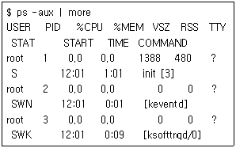
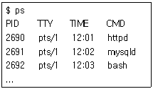
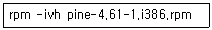

리눅스마스터-2급 (2010-12-04 기출문제)
1과목: 리눅스 운영 및 관리
1. 파일에 대한 모든 사용자의 읽기, 쓰기, 실행 권한을 부여하기 위한 명령과 옵션으로 올바른 것은?
- chmod 777 파일명
- chmod 555 파일명
- chmod 222 파일명
- chmod 111 파일명
(정답률: 96%)

2. 사용자가 사용 중인 로그인 쉘(shell)을 바꾸는 명령은?
- chsh
- chgrp
- chown
- chmod
(정답률: 90%)
3. 파일시스템에 대한 설명으로 틀린 것은?
- 운영체제가 파일을 시스템의 디스크상에 구성 하는 방식을 의미한다.
- 파일시스템은 디스크 파티션 상에 파일들이 연속적이고 일정한 규칙으로 저장하는 방식을 제시하는 역할을 담당한다.
- 1개의 하드디스크에 2개의 파티션으로 나뉘어져 있어도 파일시스템은 1개로 간주한다.
- 파일시스템은 파티션을 구성해 주는 역할을 한다.
(정답률: 68%)
4. 파일시스템을 스캔(scan)하여 일관성을 유지하고 있는가를 검사하며, 시스템이 처음 가동 될 때 시스템 초기화 스크립트에 의해 자동으로 실행 되는 명령어는?
- mkfs
- fsck
- du
- df
(정답률: 80%)
5. 새로운 파일 시스템을 생성하기 위한 명령어로 알맞은 것은?
- mkfs
- fsck
- make
- mv
(정답률: 82%)
6. 디스크 사용량 정보보기 명령에 대한 설명으로 틀린 것은?
- du는 용량체크의 대상이 파일과 디렉토리이다.
- df는 용량체크의 대상이 파일시스템이다.
- du는 파일공간의 사용량을 체크한다.
- df는 디렉토리와 파일을 대상으로 용량을 체크 할 수 있다.
(정답률: 60%)
7. 리눅스 콘솔에 의해 로그인 직전 다음과 같이 출력되도록 하려고 할 때 변경해야할 파일로 알맞은 것은?
- /etc/issue
- /etc/passwd
- /etc/shadow
- /etc/inittab
(정답률: 45%)
8. umask 값이 022인 경우, 사용자가 디렉토리를 생성시 기본적으로 설정되는 권한은 무엇인가?
- drwxrwxrwx
- drwxr-xr-x
- dr-xr-xr-x
- drwx------
(정답률: 84%)
9. ‘cache’라는 새로운 사용자 계정을 생성할 때, 이 사용자가 가지게 될 디렉토리의 상위 디렉토리로 가장 올바른 것은?
- /boot
- /usr
- /home
- /etc
(정답률: 60%)
10. 새롭게 만들어지는 파일이나 디렉토리에 대하여 디폴트 퍼미션의 권한을 제한하도록 설정하는 명령어로 알맞은 것은?
- umask
- chgrp
- chown
- chmod
(정답률: 74%)
11. 윈도우 운영체제의 ‘Windows 작업관리자’와 같은 기능을 담당하는 리눅스 명령어로 가장 올바른 것은?
- ps
- bash
- top
- nice
(정답률: 50%)
12. 다음 프로세스 상태 명령에 대한 결과 중 ‘VSZ’가 의미하는 정보는?

- 실제 메모리 사용량
- 가상 메모리 사용량
- 메모리 사용 비율
- 프로세스 크기
(정답률: 79%)
13. web daemon 프로세스인 ‘httpd’를 실행 상태에서 강제 중단하고자 할 때 사용할 수 있는 명령으로 가장 올바른 것은?

- kill -9 2690
- del -9 2690
- mv -9 2690
- rm -9 2690
(정답률: 92%)
14. 리눅스 다중처리에 대한 설명 중 틀린 것은?
- foreground는 명령실행 상태를 화면에 보여 주면서 실행되는 방식이다.
- background는 명령실행 상태를 화면에 보여 주지 않으면서 실행되는 방식이다.
- foreground는 화면상에서 데이터 입력이 가능 하다.
- background는 화면상에서 데이터 입력이 가능 하다.
(정답률: 75%)
15. 리눅스 운영체제를 갖춘 시스템이 부팅되면서 가장 먼저 실행되는 프로세스는?
- start
- init
- first
- end
(정답률: 87%)
16. 시스템 프로세스 수와 실행되고 있는 프로세스의 상태를 보여주는 명령으로 가장 올바른 것은?
- top
- kill
- nice
- cron
(정답률: 83%)
17. nice 명령에 대한 설명으로 올바르지 않은 것은?
- 옵션 없이 사용하면 상속받은 현재 순서의 우선순위를 출력한다.
- 최고 -20에서 최저 10까지가 범위이다.
- 수치가 작을수록 높은 우선순위를 갖는다.
- 수치가 높을수록 낮은 우선순위를 갖는다.
(정답률: 78%)
18. 정기적으로 명령이나 프로세스를 스케줄링 할 수 있는 명령으로 알맞은 것은?
- cron
- alarm
- warn
- at
(정답률: 80%)
19. 포그라운드(foreground)로 실행되는 프로그램을 실행이 끝나기 전 suspend 했다. 이 프로그램을 다시 포그라운드로 만들기 위한 명령어로 알맞은 것은?(단, 해당 프로그램의 작업번호는 3이다.)
- foreground %3
- %3 fg
- fg #3
- fg %3
(정답률: 77%)
20. 리눅스의 프로세스 관련 명령에 대한 설명으로 틀린 것은?
- init 프로세스의 PID는 0번을 갖는다.
- fork는 새로운 프로세스 생성을 위한 시스템 호출 명령이다.
- foreground로 실행되는 프로그램은 실행 중에 Ctrl-Z를 누르면 suspend 상태가 된다.
- kill 명령은 프로세스의 강제 종료에 주로 사용 된다.
(정답률: 65%)
21. bash 사용 환경에서 현재 사용 중인 쉘의 종류를 알려면 다음 중 어떤 명령을 사용하여야 하는가?
- list $SHELL
- write $SHELL
- echo $SHELL
- ping $SHELL
(정답률: 86%)
22. 다음 쉘에 대한 설명으로 틀린 것은?
- zsh - 최초의 쉘이다.
- ksh - C 쉘의 혈통을 잇고 있다.
- Tcsh - 명령행 편집 기능을 가지고 있다.
- csh - 유닉스 시스템에서 C언어와 유사하여 많이 쓰이고 있다.
(정답률: 59%)
23. Ctrl-C 를 누르면 현재 실행중인 프로그램이 중단 되게 하도록 키를 설정해 주는 리눅스 명령어는 무엇인가?
- chsh
- alias
- pwd
- stty
(정답률: 55%)
24. 터미널에 입력된 문자가 쉘에 의해 수신되어 해석 될 때 중간에 반드시 통과해야 하는 것은 무엇인가?
- 디스크
- 디바이스 드라이브
- 커널
- 네트워크 카드
(정답률: 34%)
25. 다음 쉘 환경변수에 관한 설명 중 틀린 것은?
- PATH 변수에는 여러 디렉토리를 지정할 수 없다.
- PATH 변수에 콜론(:)을 사용할 수 있다.
- 쉘 변수에 설정된 값을 볼 수 있는 명령은 env 이다.
- TERM 쉘 변수는 터미널 데이터베이스에 의해 지정된 터미널 유형의 이름을 설정한다.
(정답률: 53%)
26. 사용하는 쉘이 bash 일 때 사용자가 로그인 시 반드시 실행되는 rc 파일은?
- .cshrc
- .bashrc
- .sourcerc
- .newsrc
(정답률: 83%)
27. alias 명령에 대한 설명 중 틀린 것은?
- 명령어가 길거나 옵션을 일일이 지정하기 싫은 경우에 사용할 수 있다.
- 사용 형식은 쉘에서 alias 별명=‘명령어’ 이다.
- bash 쉘에서 alias rm=‘rm -i’ 를 실행시킨 후 rm 과 rm -i를 실행시키면 그 실행 결과는 같다.
- alias 만 입력하여 실행시키면 아무런 결과도 출력되지 않는다.
(정답률: 73%)
28. bash에서 사용할 수 있는 명령어 히스토리 기능 중에서 ‘!?pw?’ 는 최근에 수행되었던 다음 명령 중 어떤 명령을 가리키는가?
- passwd
- pr
- ps
- pwd
(정답률: 70%)
29. 리눅스에서 사용되는 편집기에 관한 설명 중 틀린 것은?
- Pico 편집기는 Ctrl-G 등과 같은 편집 단축키를 제공하지 않는다.
- Pico 편집기는 pine 프로그램에 내장되어 있는 쉽고 편리한 유닉스용 텍스트 에디터이다.
- vi 에디터는 여러가지 설정을 해 놓은 vimrc 라는 파일이 가지고 있다.
- emacs는 Ctrl 또는 Alt 키와 다른 키의 조합을 이용하여야 하는 비모드형 편집기이다.
(정답률: 49%)
30. 다음 중 emacs 편집기를 종료하기 위하여 사용하는 명령으로 알맞은 것은?
- Alt-x-Alt-c
- Ctrl-x-Alt-c
- Alt-x-Ctrl-c
- Ctrl-x-Ctrl-c
(정답률: 54%)
31. vi 편집기에서 줄 번호를 보기 위하여 사용하는 명령어로 알맞은 것은?
- set nu
- set linenumber
- set linenum
- set line
(정답률: 79%)
32. vi 편집기의 명령 모드에서 커서를 이동하는 방법을 설명한 것 중 틀린 것은?
- h : 커서를 한 칸 왼쪽으로 이동한다.
- k : 커서를 한 줄 위로 이동한다.
- $ : 커서를 현재 줄의 맨 앞으로 이동한다.
- b : 커서를 이전 단어의 첫 글자로 이동한다.
(정답률: 57%)
33. emacs 편집기의 커서 이동 키에 대한 설명 중 틀린 것은?
- Ctrl-a : 라인의 처음으로 이동
- Alt-e : 문장의 끝으로 이동
- Ctrl-v : 한 화면 뒤로 이동
- Alt-> : 파일 끝으로 이동
(정답률: 35%)
34. vi 편집기 명령어에 대한 설명 중 틀린 것은?
- ‘:w’ : 편집한 파일을 저장하는 명령
- ‘:r’ : 편집 중인 파일을 읽기전용 파일로 변경
- ‘:wq’ : 편집 중인 파일을 저장하고 종료
- ‘:q!’ : 편집 중인 파일을 저장하지 않고 종료
(정답률: 74%)
35. RPM 패키지의 이름 Kernel-2.6.9-7hs.i386.rpm에서 알 수 없는 것은?
- 어느 플랫폼에서 사용될 수 있는 패키지인가?
- 패키지의 버전은 얼마인가?
- 패키지의 생성 날짜와 시간은 언제인가?
- 패키지가 몇 번째로 만들어진 것인가?
(정답률: 83%)
36. 다음 명령에 대한 설명 중 틀린 것은?

- pine-4.61-1.i386.rpm 패키지를 설치하는 명령이다.
- 설치하는 과정의 진행 정도를 백분율(%)로 표시해 준다.
- 진행과정을 샾(#) 문자로 표시해준다.
- 설치 도중 오류가 발생하면 기존 파일에 강제로 설치한다.
(정답률: 65%)
37. 특정 rpm 패키지가 제대로 설치되었는가를 검증하는 명령에 대한 설명 중 틀린 것은?
- ‘-g’ 나 ‘-G’ 옵션을 사용한다.
- 원래 패키지와 설치된 패키지 파일을 비교하여 이상 여부를 검증한다.
- 사용자가 실수로 삭제한 파일이 무엇인지를 알게 해준다.
- 내용이 변경된 파일을 확인하여 그 내용을 출력해준다.
(정답률: 35%)
38. Debian 패키지에 대한 설명 중 틀린 것은?
- dpkg는 프로그램을 설치, 제거, 업그레이드 할 수 있다.
- 이 패키지의 확장자는 ‘.dpkg’ 이다.
- dbkg 툴을 사용하여 설치한다.
- 프로그램이 어느 Debian 패키지에 있는지를 확인하기 위해서는 ‘--search’ 옵션을 사용한다.
(정답률: 39%)
39. 소프트웨어 패키지 파일의 확장자에 대한 설명 중 틀린 것은?
- .gz : gzip 프로그램을 이용하여 압축됨
- .bz2 : bzip2 프로그램에 의해 압축됨
- .Z : zip 프로그램에 의해 압축됨
- .tar : tar를 사용하여 여러개의 파일을 하나로 묶음
(정답률: 75%)
40. rpm 명령의 옵션에 대한 설명으로 틀린 것은?
- -U : 설치된 패키지 업그레이드
- --force : 기존파일에 강제적으로 설치
- -d : 설치된 패키지 제거
- -i : 새로운 패키지 설치
(정답률: 58%)
41. 압축 유틸리티 gzip으로 ihd파일을 압축했을 경우, 압축을 풀어 저장하지 않고 내용만 보는 방법으로 알맞은 것은?
- cat ihd.gz
- gzip -d ihd.gz
- zcat ihd.gz
- tar cvf ihd.gz
(정답률: 63%)
42. tar로 묶으면서 동시에 bzip2로 압축하는 방법으로 알맞은 것은?
- tar -czvf
- tar -cjvf
- tar -cpfz
- tar -cifz
(정답률: 56%)
43. 프린터큐에 있는 작업 번호가 8인 인쇄 작업을 취소할 경우에 사용하는 명령어는?
- lprm %8
- lprm $8
- lprm &8
- lprm 8
(정답률: 41%)
44. 리눅스에서 프린터 설치에 관련된 사항이 기록되어 있는 파일로 알맞은 것은?
- /usr/src/printer
- /etc/printd
- /etc/printcap
- /src/printer
(정답률: 67%)
45. 리눅스 프린터 설정과 관련된 명령어에 대한 설명으로 틀린 것은?
- lpc : 네트워크상에 연결되어 있는 프린터를 공유한다.
- lprm : 프린터큐에 있는인쇄작업을취소할 수있다.
- lpq : 프린트 큐의 상태를 모니터링 한다.
- pr : 텍스트 포맷 형식 파일의 출력 변환에 사용한다.
(정답률: 54%)
46. /dev/hda2 파일의 설명으로 알맞은 것은?
- 첫 번째 IDE 타입의 하드디스크에 세 번째 파티션
- 두 번째 IDE 타입의 하드디스크에 세 번째 파티션
- 첫 번째 IDE 타입의 하드디스크에 두 번째 파티션
- 두 번째 IDE 타입의 하드디스크에 두 번째 파티션
(정답률: 72%)
47. 리눅스의 장치 관련 설명으로 틀린 것은?
- 리눅스 장치관리자는 원격프린터를 지원한다.
- 주로 ‘/dev/lp0’을 사용하여 텍스트 파일 문서 출력이 가능하다.
- ‘/dev/sda1’은 첫 번째 SCSI 디스크의 첫 번째 파티션을 의미한다.
- 리눅스 장치 관리 시스템에서는 조이스틱을 지원하지 않는다.
(정답률: 59%)
48. 리눅스 시스템의 mp3 오디오 파일 재생 프로그램으로 올바른 것은?
- xmms
- vi
- media player
- KDE
(정답률: 65%)
2과목: 리눅스 활용
49. X윈도우 응용 프로그램은 X윈도우의 구성 요소 중 무엇에 해당하는가?
- X 서버
- X 클라이언트
- X 프로토콜
- Xlib
(정답률: 50%)
50. 시스템이 부팅될 때 X 윈도우가 자동적으로 실행되기 위한 런 레벨(run level)은 무엇인가?
- 0
- 1
- 3
- 5
(정답률: 68%)
51. X 윈도우 서버 구동 시 참조되는 사용자 홈 디렉토리 내의 파일이 아닌 것은?
- .xinitrc
- .XClients
- .Xresources
- .xserverrc
(정답률: 37%)
52. 다음 중 윈도우 매니저가 아닌 것은?
- mwm
- Gnome
- twm
- WindowMaker
(정답률: 60%)
53. 다음 중 fvwm을 기반으로 만들어진 윈도우 매니저로 알맞은 것은?
- AfterStep
- twm
- Window Maker
- mwm
(정답률: 41%)
54. 다음 중 X 윈도우를 강제로 종료하기 위한 키 조합으로 알맞은 것은?
- Alt-Tab-F
- Ctrl-Alt-C
- Ctrl-Alt-Backspace
- Ctrl-Alt-X
(정답률: 70%)
55. 다음 중 KDE 데스크탑에서 웹 브라우저 및 파일 관리기능을 담당하는 응용프로그램은 무엇인가?
- Konqueror
- Mozilla
- Firefox
- Thunderbird
(정답률: 69%)
56. 다음 중 리눅스에서 포토 리터칭과 이미지 합성 및 저작을 위한 프로그램으로 알맞은 것은?
- MTV
- XV
- GIMP
- XMMS
(정답률: 78%)
57. 다음 중 통신 프로토콜의 기본 기능이 아닌 것은?
- 데이터 대열의 분할
- 에러 제어
- 흐름 제어
- 데이터 호환
(정답률: 44%)
58. 다음 중 통신 프로토콜의 표준을 제정하는 기관이 아닌 것은?
- ISO
- ACM
- IEEE
- ANSI
(정답률: 64%)
59. 이더넷(Ethernet)에 대한 설명으로 틀린 것은?
- 전송로 액세스 방식(CSMA/CD)을 사용한다.
- 원거리 통신망(WAN)에서 널리 사용된다.
- TCP/IP, IPX 등의 다른 프로토콜을 이용할 수 있다.
- 기본 개념은 하나의 물리적 전송 매체를 다수의 노드가 공유하는 것이다.
(정답률: 54%)
60. 통신 장비 중 브리지는 OSI 참조 모델 중 어느 계층에서 동작하는 장비인가?
- 세션 계층
- 전송 계층
- 데이터 링크 계층
- 물리 계층
(정답률: 57%)
61. 프로토콜 변환기의 일종으로 서로 다른 프로토콜을 사용하는 통신망을 상호 접속하기 위해 사용하는 통신 장비를 무엇이라고 하는가?
- 라우터
- 리피터
- 브리지
- 게이트웨이
(정답률: 49%)
62. OSI 7 계층 중 4계층에 해당하는 것으로 전체 메시지의 발신지 대 수신지 간의 전달을 책임지는 계층은?
- 네트워크 계층
- 전송 계층
- 세션 계층
- 응용 계층
(정답률: 78%)
63. TCP/IP에 대한 설명으로 틀린 것은?
- 개방형 프로토콜로서 하드웨어나 운영체제에 독립적이다.
- 특정 물리적 네트워크 하드웨어에 독립적이다.
- 일관성 있고 널리 사용 가능한 사용자 서비스를 위해 표준화된 고수준의 프로토콜이다.
- IP 프로토콜은 패킷들의 전송 흐름을 제어하는 역할을 한다.
(정답률: 34%)
64. 다음 TCP/IP 프로토콜들 중 리눅스 시스템의 ping 명령과 가장 관련이 깊은 프로토콜은 무엇 인가?
- TCP
- ARP
- ICMP
- IP
(정답률: 49%)
65. 다음 중 월드와이드웹(WWW) 서비스가 사용하도록 예약되어있는 포트 번호로 알맞은 것은?
- 21
- 22
- 23
- 80
(정답률: 77%)
66. 다음 중 한 호스트의 도메인 네임에 해당하는 IP 주소를 알고자 할 때 사용하는 명령으로 알맞은 것은?
- nslookup
- ifconfig
- ping
- telnet
(정답률: 63%)
67. 리눅스 시스템에서 도메인 네임 서버를 지정해 놓은 파일은 무엇인가?
- /etc/ports
- /etc/resolv.conf
- /etc/inittab
- /etc/services
(정답률: 72%)
68. 다음 중 C 클래스의 서브넷마스크에 해당하는 것은 무엇인가?
- 255.0.0.0
- 255.255.0.0
- 255.255.255.0
- 255.255.255.255
(정답률: 85%)
69. 다음 중 최상위 도메인과 그에 대한 설명이 틀린 것은?
- ORG - 비영리 기관
- MIL - 미국 연방 군사 기관
- INT - 국제적인 특정을 가진 기관
- EDU - 초・중・고 포함 모든 교육 기관
(정답률: 39%)
70. TCP/IP 프로토콜들 중 UDP 프로토콜은 어느 계층에 속하는 프로토콜인가?
- 네트워크 접근 계층(Network access layer)
- 인터넷 계층(Internet layer)
- 전송 계층(Transport layer)
- 응용 계층(Application layer)
(정답률: 65%)
71. OSI 참조 모델 7계층 중 연결성과 통신 경로 선택을 제공하고, 데이터 전송 및 중계, 네트워크 품질 차이 조정 등의 기능을 수행하는 계층은?
- 데이터 링크 계층
- 네트워크 계층
- 전송 계층
- 세션 계층
(정답률: 48%)
72. 전체 인터넷 안에서 하나의 네트워크 프로세스를 단일하게 나타내는 IP 주소와 포트 번호의 조합을 무엇이라고 하는가?
- 소켓
- 식별자
- 필터
- 지시자
(정답률: 68%)
73. 다음 중 프로그램 기능 상 그 성격이 다른 하나는?
- telent
- csh
- rsh
- rlogin
(정답률: 45%)
74. 다음 중 작고 빠른 성능으로 임베디드 시스템 등 에서도 널리 사용되고 있는 웹브라우저는?
- 오페라
- 모질라
- 파이어폭스
- 넷스케이프
(정답률: 37%)
75. 다음 중 원격 시스템 관리를 위한 프로토콜은 무엇인가?
- IMAP
- SNMP
- SCP
- RDP
(정답률: 43%)
76. 다음 인터넷 서비스 중 인터넷상에서 실시간으로 다른 사용자들과 대화를 나눌 수 있도록 해주는 서비스는?
- TELNET
- IRC
- FTP
- MUD
(정답률: 73%)
77. 임베디드 시스템의 운영체제로서 리눅스가 갖는 특징과 거리가 먼 것은?
- 많은 사람들이 사용하는 시스템이다.
- 소스가 공개되어 있다.
- 소규모 모듈 단위로 설계되어 있다.
- Real Time 운영을 지원하지 않는다.
(정답률: 70%)
78. 근거리 무선 통신인 블루투스가 사용하는 주파수 대역폭은?
- 1.6GHz
- 2.0GHz
- 2.4GHz
- 2.8GHz
(정답률: 70%)
79. 블루투스 기술에서 양방향 전송을 위해 사용하는 전송 방식은?
- 회선교환 전송 방식
- 시분할 다중전송 방식
- 주파수분할 전송 방식
- 패킷교환 전송 방식
(정답률: 36%)
80. IPv4(Internet Protocol version 4)의 주소체계는 몇 bit로 구성되어 있는가?
- 32 bit
- 64 bit
- 128 bit
- 256 bit
(정답률: 73%)
chmod는 파일이나 디렉토리의 권한을 변경하는 명령어이다. 숫자 777은 각각의 숫자가 의미하는 것은 다음과 같다.
- 7: 읽기, 쓰기, 실행 권한이 모두 부여됨
- 5: 읽기, 실행 권한이 부여됨
- 2: 쓰기, 실행 권한이 부여됨
- 1: 실행 권한이 부여됨
따라서 "chmod 777 파일명"은 해당 파일에 대해 모든 사용자에게 읽기, 쓰기, 실행 권한을 부여하는 명령어이다.